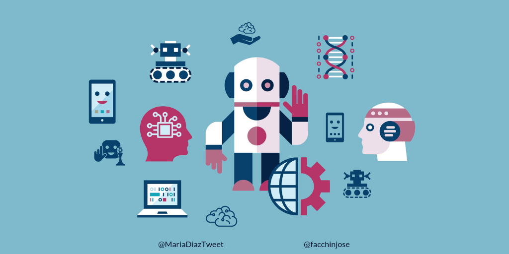
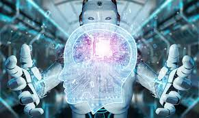
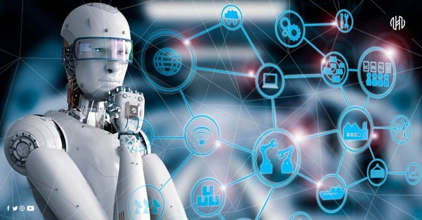

INTELIGENCIA ARTIFICIAL
¿Qué es?
En términos sencillos, inteligencia artificial (IA) se refiere a
los sistemas o las máquinas que imitan la inteligencia humana para
realizar tareas y que tienen la capacidad de mejorar
iterativamente a partir de la información que recopilan. La IA se
manifiesta de varias formas. Algunos ejemplos son:
Los bots conversacionales que utilizan IA para comprender más
rápido los problemas de los clientes y proporcionar respuestas más
eficientes.
Los asistentes inteligentes utilizan la IA para analizar
información crítica proveniente de grandes conjuntos de datos de
texto libre para mejorar la programación.
Los motores de recomendación pueden proporcionar recomendaciones
automatizadas para programas de TV según los hábitos de
visualización de los usuarios.

Características
-
Eliminación de tareas monótonas: Implica que un sistema de
inteligencia artificial continúe haciendo la tarea tal y como se
le ordenó, sin importar las veces que deba hacerlo. Ello conduce
además a minimizar los errores y los costos humanos.
-
Manejo de una gran cantidad de datos: Representa uno de
los aspectos más relevantes de las características de la
inteligencia artificial. Los sistemas artificialmente inteligentes
gestionan grandes cantidades de datos. Incluso una pequeña empresa
de unos cincuenta empleados tiene enormes cantidades de datos para
analizar, los cuales pueden manejarse gracias a estos sistemas.
Sumado a ello, se almacena información de múltiples fuentes.
-
Imitación de la cognición humana: Es una de las
características de la inteligencia artificial más sobresalientes.
¿El motivo? Pues, mediante estos sistemas se imita la forma en que
la mente humana piensa y solventa problemas. De modo que se hacen
inferencias, se interpreta el entorno y se toman decisiones
(Mazurek, 2019). Es posible que no todo pueda ser idéntico; sin
embargo, los desarrolladores y científicos trabajan arduamente
para alcanzar plenamente esta particularidad.
-
Son futuristas: Los negocios que emplean la inteligencia
artificial pueden contar con la percepción del entorno para
encontrar oportunidades. Por ejemplo, un vehículo autónomo
registra la velocidad de los carros cercanos e intenta ejecutar
patrones similares a los encontrados en el tráfico. Mediante
tecnologías como el aprendizaje automático, se pueden introducir
datos en algoritmos y obtener determinado objetivo en varios
escenarios.
¿Cuáles son los tipos de Inteligencia Artificial disponibles en la
actualidad?
Tratándose de I.A. el camino que nos queda por recorrer sigue
siendo muy largo. Es cierto que la ciencia logró desarrollar
sistemas que responden bastante bien a ciertos requerimientos y
que son capaces de aprender de acuerdo a las necesidades del
usuario, pero estamos lejos de imitar el funcionamiento de la
mente humana y de comprender a fondo su complejidad. No obstante,
la ciencia no decae en sus intentos, por lo que en la actualidad
podemos identificar al menos 4 tipos de inteligencia artificial,
algunos de ellos ya conviviendo entre nosotros.
Tecnología reactiva.
Inteligencia Artificial con memoria limitada.
Teoría de la mente o comprensión del pensamiento humano.
La simplificación de la programación robótica hace más fácil que
los trabajadores puedan manejarlo y supervisarlo con una formación
previa.
I.A. Autoconsciente.

